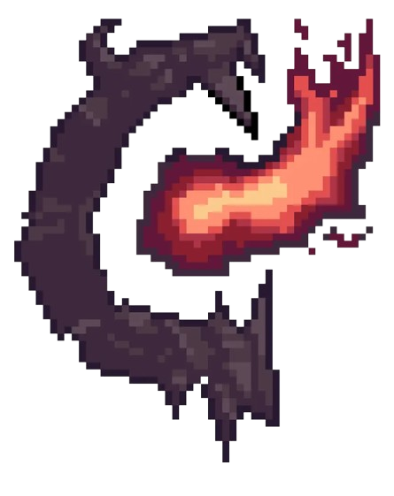
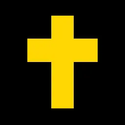

Итак, я увлекаюсь:
-
Компьютерными играми, из любимых:
- Deltarune
-
 Undertale
Undertale
-


Terraria (особенно Calamity mod) - ULTRAKILL
-

FAITH -
 DUSK
DUSK
-
 Subnatica
Subnatica
- Чтением книг
- Прогулками по горам
- Программированием